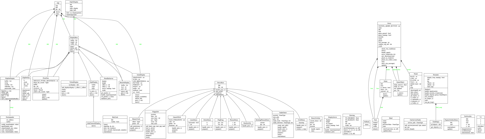

Developer Documentation
Find here information for developers of this project. If you just want to use the package you don’t need to read any further.
Deployment
Checkout the repository to /home/pi/flipflapflop:
$ cd /home/pi
$ git clone https://github.com/tbs1-bo/flipflapflop.git
Having poetry installed, you can install the package and its dependencies:
$ cd flipflapflop
$ poetry install
The deployment scenario described here relies on a Raspberry Pi that acts as an access point. To setup a Pi this way you can follow the instructions from raspberrypi.org. We choose to give the Pi the IP4-address 10.0.0.1/8. The ethernet port can be connected directly or via USB to a local net in order to make the Pi accessible for other scenarios.
The display will be connected to the Pi directly. On the Pi runs a systemd-service as described
in the Raspberry Pi Documentation.
The service file flipflapflop.service
must be copied to /etc/systemd/system and can be started afterwards:
$ sudo systemctl start flipflapflop.service
To enable the service for automatic startup during boot use the following command:
sudo systemctl enable flipflapflop.service
The display server runs on the default port 10101 and can be configured further in
displayserver_service.py. You can specify
dimensions of the display as well as module configuration here.
Deployment Scripts
There is a setup script deploy_rpi.sh
that configures the Pi and installs the necessary software.
The setup script deploy_openwrt.sh
will setup the software to run on a OpenWRT OS.
Creating the documentation
The documentation is made with Sphinx. Therefore the sphinx framework and a third party theme from readthedocs must be installed.
$ pip install sphinx sphinx-rtd-theme
The documentation is created with sphinx and is configured in folder docgen.
You can use make html or make.bat html to create the docucmentation
in docgen/_build/html. It will automaticall be copied to docs.
After pushing to github it will be available
there.
Class Diagram
The following diagram shows classes of the project.
Video Backups
The videos linked in this documentation are hosted by YouTube. There is a mirror of these videos at archive.org.